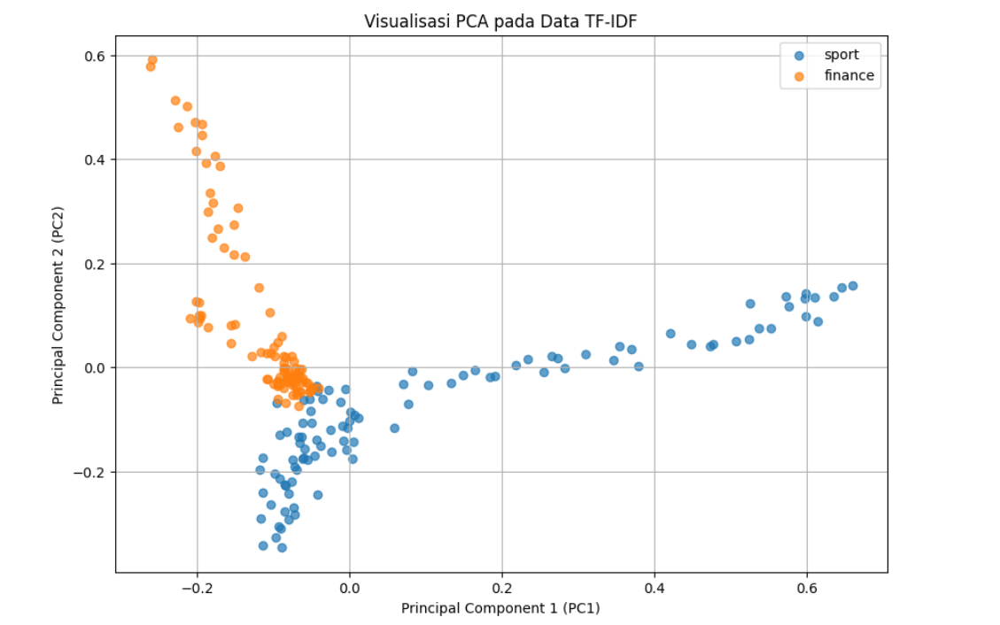

Preprocessing & TF-IDF
Pengolahan dan representasi data teks berita
Preprocessing Data Teks
Tahap preprocessing dilakukan untuk mempersiapkan teks berita sebelum digunakan dalam proses ekstraksi fitur. Data yang digunakan merupakan hasil crawling sebanyak 200 berita dari kategori Sport dan Finance.
Preprocessing adalah proses mempersiapkan teks agar lebih mudah diolah oleh komputer. Pada tahap ini, teks berita yang masih memiliki berbagai variasi penulisan dibersihkan dan dinormalisasi.
Tahapan Preprocessing
Proses pembersihan dan normalisasi teks
Import Library
Library yang digunakan pada proses pembersihan dan normalisasi
import pandas as pd
import re
import nltk
from Sastrawi.Stemmer.StemmerFactory import StemmerFactory
from nltk.corpus import stopwords
print("Library berhasil di-import!")Pada sel pertama dilakukan import library yang diperlukan untuk proses preprocessing dan analisis teks.
pandas digunakan untuk membaca dan mengolah dataset dalam bentuk DataFrame. re atau Regular Expression digunakan untuk melakukan pembersihan teks, seperti menghapus URL, angka, dan karakter khusus. nltk digunakan untuk membantu proses pengolahan bahasa alami, khususnya dalam mengambil daftar stopword Bahasa Indonesia.
Selain itu, digunakan library Sastrawi melalui StemmerFactory untuk melakukan stemming Bahasa Indonesia. Sementara stopwords digunakan untuk mengambil daftar kata umum yang akan dihilangkan dari teks. Jika semua library berhasil dimuat, program menampilkan pesan berhasil.
Membaca Dataset
df = pd.read_csv(
"dataset_detik.csv",
sep=";",
encoding="utf-8-sig"
)
print("Dataset berhasil dibaca!")
print("Jumlah data:", len(df))
print("Jumlah kolom:", len(df.columns))
display(df.head())
Melihat Kondisi Data sebelum Preprocessing
print("Contoh berita sebelum preprocessing:\n")
print(df["isi_berita"].iloc[0])
print("\nPanjang teks berita pertama:")
print(len(df["isi_berita"].iloc[0]))
print("\nDistribusi label:")
print(df["label"].value_counts())Mendownload Stopwords
nltk.download("stopwords")Sel keempat digunakan untuk mengunduh dataset stopword dari NLTK. Stopword adalah kata-kata umum yang biasanya memiliki informasi yang relatif rendah dalam proses analisis teks. Contohnya dalam Bahasa Indonesia: yang, dan, di, ke, dari, untuk Daftar stopword ini nantinya digunakan pada proses stopword removal.
Menyiapkan Stopword dan Stemming
stop_words = set(stopwords.words("indonesian"))
factory = StemmerFactory()
stemmer = factory.create_stemmer()
print("Jumlah stopword:", len(stop_words))
print("Stemmer Bahasa Indonesia berhasil dibuat!")
Sel kelima digunakan untuk menyiapkan daftar stopword Bahasa Indonesia dan stemmer. Daftar stopword diambil dari NLTK, kemudian diubah menjadi set agar dapat digunakan pada proses stopword removal. Selanjutnya, Sastrawi Stemmer dibuat untuk mengubah kata ke bentuk dasarnya pada tahap stemming.
Membuat Fungsi Preprocessing
def preprocessing_teks(teks):
# 1. Case folding
teks = teks.lower()
# 2. Menghapus URL
teks = re.sub(r"http\S+|www\S+", "", teks)
# 3. Menghapus angka
teks = re.sub(r"\d+", "", teks)
# 4. Menghapus tanda baca dan karakter khusus
teks = re.sub(r"[^a-zA-Z\s]", " ", teks)
# 5. Menghapus spasi berlebih
teks = re.sub(r"\s+", " ", teks).strip()
# 6. Tokenisasi sederhana
tokens = teks.split()
# 7. Stopword removal
tokens = [kata for kata in tokens if kata not in stop_words]
# 8. Stemming Bahasa Indonesia
tokens = [stemmer.stem(kata) for kata in tokens]
# Menggabungkan kembali menjadi teks
return " ".join(tokens)
print("Fungsi preprocessing berhasil dibuat!")
Menerapkan Preprocessing ke Dataset
df["teks_preprocessed"] = df["isi_berita"].apply(preprocessing_teks)
print("Preprocessing selesai!")
display(df[["id", "isi_berita", "teks_preprocessed", "label"]].head())
Membuat Matriks TF-IDF
from sklearn.feature_extraction.text import TfidfVectorizer
# Membuat objek TF-IDF
vectorizer = TfidfVectorizer()
# Mengubah teks hasil preprocessing menjadi matriks TF-IDF
tfidf_matrix = vectorizer.fit_transform(df["teks_preprocessed"])
print("TF-IDF berhasil dibuat!")
print("Jumlah dokumen :", tfidf_matrix.shape[0])
print("Jumlah fitur/kata unik :", tfidf_matrix.shape[1])
Melihat Kata Unik
fitur_kata = vectorizer.get_feature_names_out()
print("Jumlah seluruh kata unik:", len(fitur_kata))
print("\n10 kata unik pertama:")
print(fitur_kata[:10])
Hasil TF-IDF
# Mengubah matriks TF-IDF menjadi DataFrame
tfidf_df = pd.DataFrame(
tfidf_matrix.toarray(),
columns=vectorizer.get_feature_names_out()
)
# Menambahkan ID dan label
tfidf_df = pd.concat([
df[["id"]].reset_index(drop=True),
tfidf_df.reset_index(drop=True),
df[["label"]].reset_index(drop=True)
], axis=1)
# Menampilkan hasil TF-IDF
display(tfidf_df)
Reduksi Dimensi dengan PCA
from sklearn.decomposition import PCA
# Mengubah matriks TF-IDF menjadi bentuk dense
tfidf_dense = tfidf_matrix.toarray()
# Membuat PCA menjadi 2 dimensi
pca = PCA(n_components=2)
# Melakukan reduksi dimensi
tfidf_pca = pca.fit_transform(tfidf_dense)
print("PCA berhasil dilakukan!")
print("Ukuran data sebelum PCA :", tfidf_dense.shape)
print("Ukuran data setelah PCA :", tfidf_pca.shape)
print("\nExplained Variance Ratio:")
print(pca.explained_variance_ratio_)
print("\nTotal Explained Variance:")
print(pca.explained_variance_ratio_.sum())
Hasil PCA digunakan untuk mereduksi dimensi data TF-IDF dari 5.068 fitur menjadi 2 dimensi. Dua dimensi hasil reduksi direpresentasikan sebagai Principal Component 1 (PC1) dan Principal Component 2 (PC2). Hasil PCA ini kemudian dapat digunakan untuk visualisasi persebaran data berdasarkan label Sport dan Finance.
Hasil Reduksi Dimensi PCA
Hasil PCA digunakan untuk mereduksi dimensi data TF-IDF dari 5.068 fitur menjadi 2 dimensi. Dua dimensi hasil reduksi direpresentasikan sebagai Principal Component 1 (PC1) dan Principal Component 2 (PC2). Hasil PCA ini kemudian dapat digunakan untuk visualisasi persebaran data berdasarkan label Sport dan Finance.
Sebelum PCA: 200 dokumen × 5.068 fitur
Setelah PCA: 200 dokumen × 2 komponen
Komponen: PC1 dan PC2
Tujuan: mengurangi dimensi data TF-IDF agar dapat divisualisasikan dalam dua dimensi.
Cumulative Explained Variance
Grafik berikut menunjukkan hubungan antara jumlah komponen PCA dengan cumulative explained variance.
